Approximate time: 90 minutes
Learning Objectives
- Describe what R and RStudio are.
- Interact with R using RStudio.
- Familiarize various components of RStudio.
- Employ variables in R.
What this lesson is NOT
In this course we are NOT going to be giving a comprehensive introduction to all of the awesome things that R and RStudio can do. Rather, we are going to be learning just enough to accomplish our goal of differential expression analysis.
If you do want to learn more, this lesson is taken from a workshop from Harvard HPC, which is a extremely comprehensive. We hope to offer an NICHD version of this workshop in the near future!
There is also a BSPC training page full of links to R-related learning resources.
What is R?
The common misconception is that R is a programming language but in fact it is much more than that. Think of R as an environment for statistical computing and graphics, which brings together a number of features to provide powerful functionality.
The R environment combines:
- effective handling of big data
- collection of integrated tools
- graphical facilities
- simple and effective programming language
Why use R?

R is a powerful, extensible environment. It has a wide range of statistics and general data analysis and visualization capabilities.
- Data handling, wrangling, and storage
- Wide array of statistical methods and graphical techniques available
- Easy to install on any platform and use (and it’s free!)
- Open source with a large and growing community of peers
Examples of R used in the media and science
- “At the BBC data team, we have developed an R package and an R cookbook to make the process of creating publication-ready graphics in our in-house style…” - BBC Visual and Data Journalism cookbook for R graphics
- “R package of data and code behind the stories and interactives at FiveThirtyEight.com, a data-driven journalism website founded by Nate Silver (initially began as a polling aggregation site, but now covers politics, sports, science and pop culture) and owned by ESPN…” - fivethirtyeight Package
- Single Cell RNA-seq Data analysis with Seurat
What is RStudio?
RStudio is freely available open-source Integrated Development Environment (IDE). RStudio provides an environment with many features to make using R easier and is a great alternative to working on R in the terminal.

- Graphical user interface, not just a command prompt
- Great learning tool
- Free for academic use
- Platform agnostic
- Open source
Logging on to Biowulf’s HPC On Demand
HPC OnDemand provides convenient web interfaces to your interactive Biowulf applications, such as RStudio, IGV and Jupyter notebooks. Some of the major advantages of using HPC on Demand is that these apps will run on the computing power of Biowulf and you will have direct access to your files on Biowulf.
Please note that you will need to be on campus Wifi or VPN, and be ready to connect your badge to your computer, in order to use HPC on Demand.
-
Go to: https://hpcondemand.nih.gov/pun/sys/dashboard/. You will be asked to insert your badge and enter your PIN.
-
Click the RStudio Server button.
-
Adjust values as needed. We will get in the habit of requesting a little extra working memory for downstream analyses:
- Pick a reasonable number of hours (2 for class, for example)
- 6 CPUS
- 6GB of allocated memory
- Allocated Scratch: 10 GB
- Leave the R Version as default
- Starting directory:
/data/Bspc-training/YOUR_USERNAME/rnaseq/. Note that you need to add your
-
Your job will queue, but within a few minutes, the page will update to give you these options:
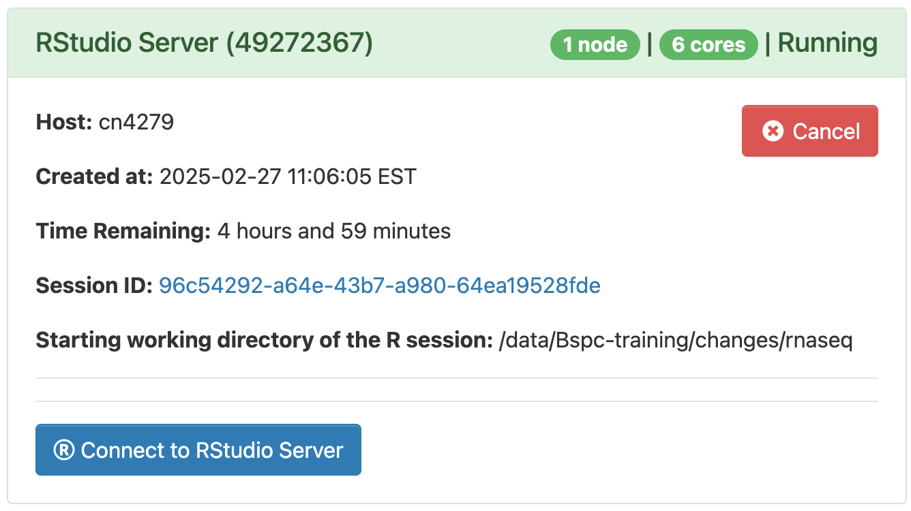
-
Go ahead and click on the big blue Connect to RStudio Server button! You will see an interface that looks generally like this:
 {alt=”RStudio interface”
width=”367”}
{alt=”RStudio interface”
width=”367”}
Creating a new project directory in RStudio
Let’s create a new project directory for our “Introduction to R” lesson today. Note that images may differ slightly from your own - they are from a previous version of this workshop that was not on HPC on Demand.
-
Open RStudio
-
Go to the
Filemenu and selectNew Project. -
In the
New Projectwindow, chooseNew Directory. Then, chooseNew Project. Name your new directoryIntro-to-Rand then “Create the project as subdirectory of:”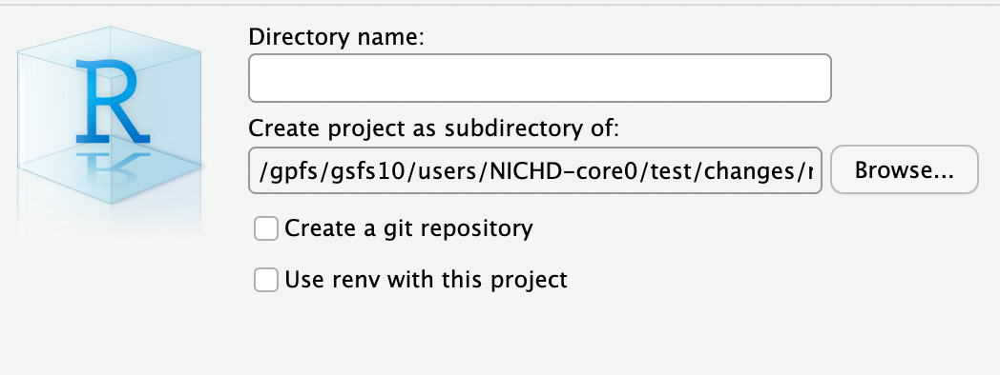
-
Click Browse, then click the three horizontal dots at the top-right corner of the finder window window. You may be in a different default location then this window, so don’t worry. We will be fixing this in the next step.
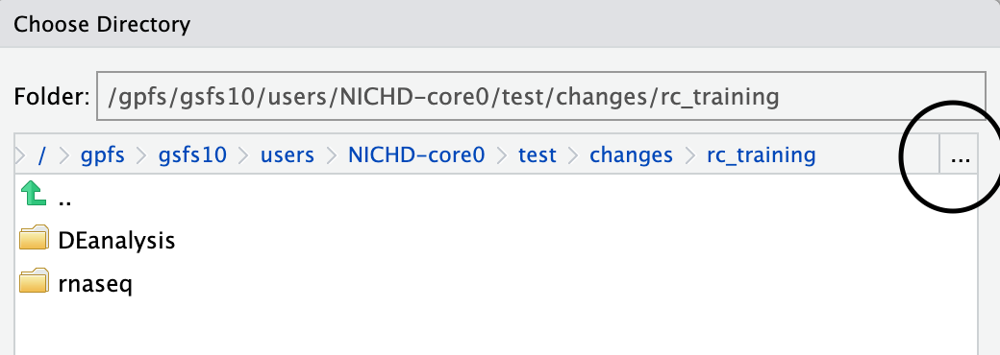
-
When the “Go To Folder” window pops up, enter the path to your
/data/Bspc-training/usernamedirectory, using your actual username -
Select
rnaseqfrom the list of directories and click “Choose”.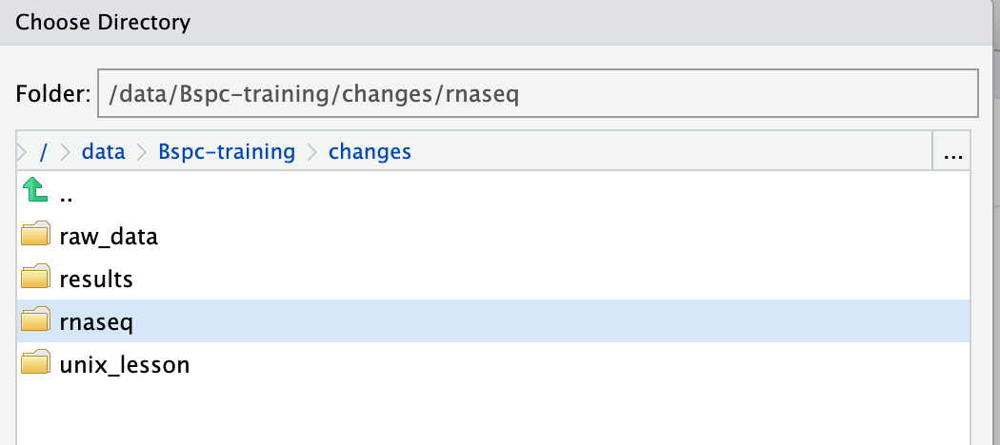
-
Your “New Project Wizard” screen should now look like this - Click on
Create Project.
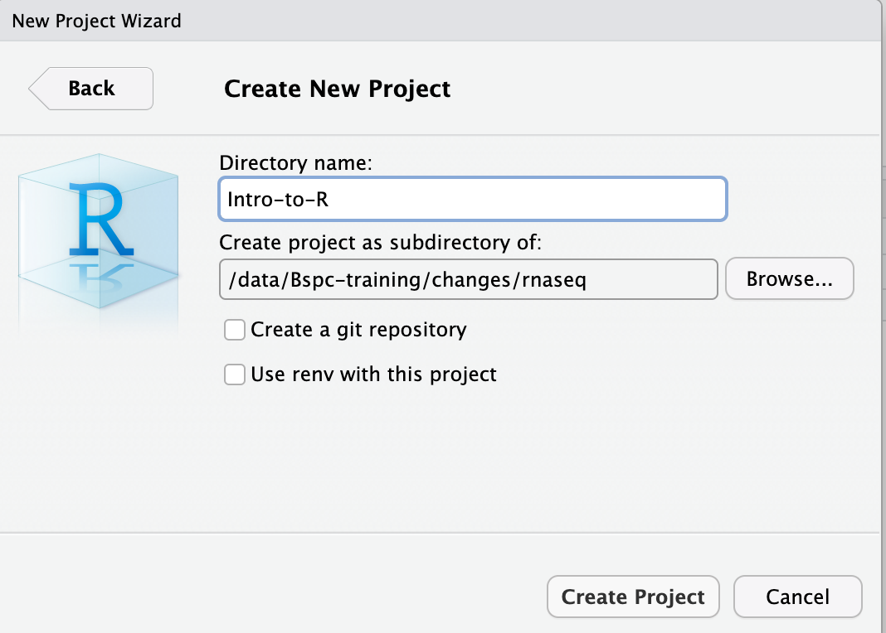
- RStudio should reload with the project open, but if the project does
not automatically open in RStudio, then go to the
Filemenu, selectOpen Project, and chooseIntro-to-R.Rproj. - When RStudio opens, you will see three panels in the window.
- Go to the
Filemenu and selectNew File, and selectR Script. - Go to the
Filemenu and selectSave As..., typeIntro-to-Rand selectSave. R will automatically give the script the.Rfile extension.

What is a project in RStudio?
It is simply a directory that contains everything related your analyses
for a specific project. RStudio projects are useful when you are working
on context- specific analyses and you wish to keep them separate. When
creating a project in RStudio you associate it with a working directory
of your choice (either an existing one, or a new one). A . RProj file
is created within that directory and that keeps track of your command
history and variables in the environment. The . RProj file can be used
to open the project in its current state but at a later date.
When a project is (re) opened within RStudio the following actions are taken:
- A new R session (process) is started
- The .RData file in the project’s main directory is loaded, populating the environment with any objects that were present when the project was closed.
- The .Rhistory file in the project’s main directory is loaded into the RStudio History pane (and used for Console Up/Down arrow command history).
- The current working directory is set to the project directory.
- Previously edited source documents are restored into editor tabs
- Other RStudio settings (e.g. active tabs, splitter positions, etc.) are restored to where they were the last time the project was closed.
Information adapted from RStudio Support Site
RStudio Interface
The RStudio interface has four main panels:
- Console: where you can type commands and see output. The console is all you would see if you ran R in the command line without RStudio.
- Script editor: where you can type out commands and save to file. You can also submit the commands to run in the console.
- Environment/History: environment shows all active objects and history keeps track of all commands run in console
- Files/Plots/Packages/Help
Organizing your working directory & setting up
Viewing your working directory
Before we organize our working directory, let’s check to see where our current working directory is located by typing into the console:
getwd()
Your working directory should be the Intro-to-R folder constructed
when you created the project. The working directory is where RStudio
will automatically look for any files you bring in and where it will
automatically save any files you create, unless otherwise specified.
You can visualize your working directory by selecting the Files tab
from the Files/Plots/Packages/Help window.

If you wanted to choose a different directory to be your working
directory, you could navigate to a different folder in the Files tab,
then, click on the More dropdown menu which appears as a Cog and
select Set As Working Directory.

Structuring your working directory
To organize your working directory for a particular analysis, you should
separate the original data (raw data) from intermediate datasets. For
instance, you may want to create a data/ directory within your working
directory that stores the raw data, and have a results/ directory for
intermediate datasets and a figures/ directory for the plots you will
generate.
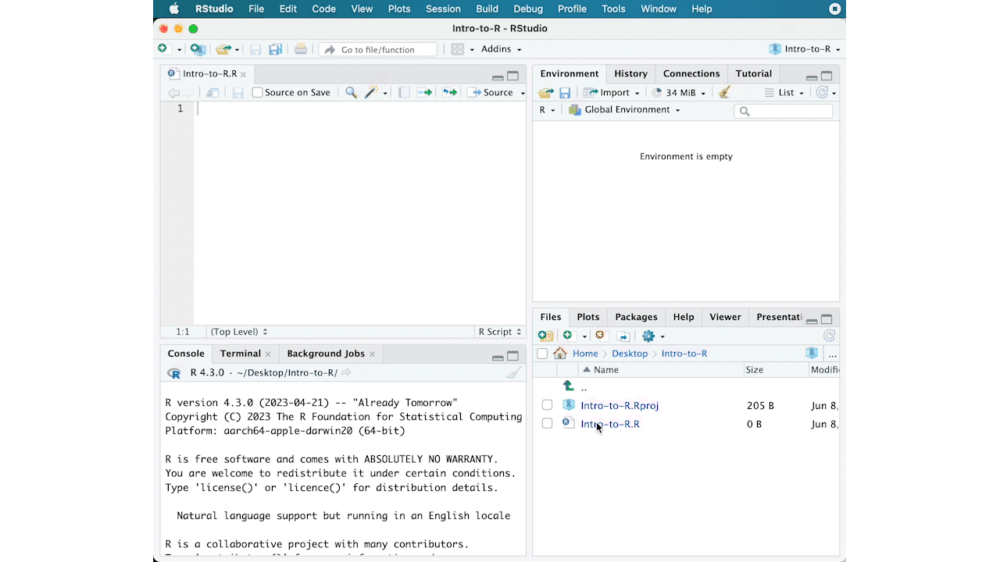
Let’s create these three directories within your working directory by
clicking on New Folder within the Files tab.
When finished, your working directory should look like:
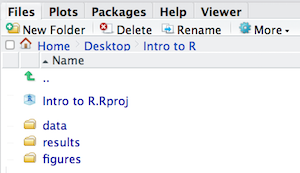
Setting up
This is more of a housekeeping task. We will be writing long lines of code in our script editor and want to make sure that the lines “wrap” and you don’t have to scroll back and forth to look at your long line of code.
Click on “Code” at the top of your RStudio screen and select “Soft Wrap Long Lines” in the pull down menu.
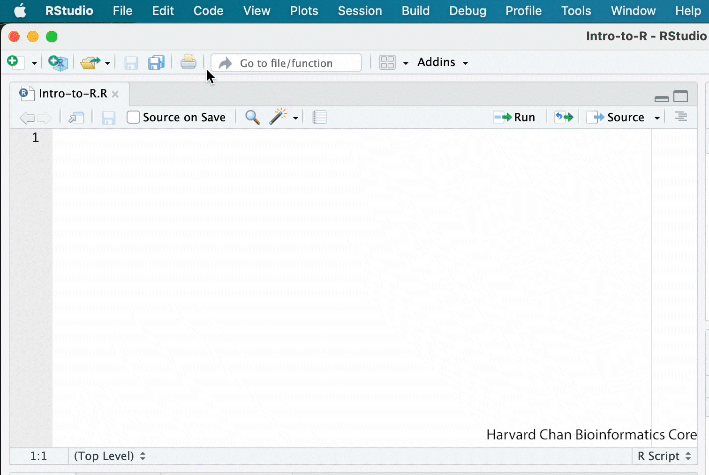
Interacting with R
Now that we have our interface and directory structure set up, let’s start playing with R! There are two main ways of interacting with R in RStudio: using the console or by using script editor (plain text files that contain your code).
Console window
The console window (in RStudio, the bottom left panel) is the place where R is waiting for you to tell it what to do, and where it will show the results of a command. You can type commands directly into the console, but they will be forgotten when you close the session.
Let’s test it out:
3 + 5
Script editor
Best practice is to enter the commands in the script editor, and
save the script. You are encouraged to comment liberally to describe the
commands you are running using #. This way, you have a complete record
of what you did, you can easily show others how you did it and you can
do it again later on if needed.
The Rstudio script editor allows you to ‘send’ the current line or the
currently highlighted text to the R console by clicking on the Run
button in the upper-right hand corner of the script editor.
Now let’s try entering commands to the script editor and using the
comments character # to add descriptions and highlighting the text to
run:
# Intro to R Lesson
# Feb 28th, 2025
# Interacting with R
## I am adding 3 and 5. R is fun!
3+5

Alternatively, you can run by simply pressing the Ctrl and
Return/Enter keys at the same time as a shortcut.

You should see the command run in the console and output the result.

What happens if we do that same command without the comment symbol #?
Re-run the command after removing the # sign in the front:
I am adding 3 and 5. R is fun!
3+5
Now R is trying to run that sentence as a command, and it doesn’t work. We get an error in the console “Error: unexpected symbol in “I am” means that the R interpreter did not know what to do with that command.”
Console command prompt
Interpreting the command prompt can help understand when R is ready to accept commands. Below lists the different states of the command prompt and how you can exit a command:
Console is ready to accept commands: >.
If R is ready to accept commands, the R console shows a > prompt.
When the console receives a command (by directly typing into the console
or running from the script editor (Ctrl-Enter), R will try to execute
it.
After running, the console will show the results and come back with a
new > prompt to wait for new commands.
Console is waiting for you to enter more data: +.
If R is still waiting for you to enter more data because it isn’t
complete yet, the console will show a + prompt. It means that you
haven’t finished entering a complete command. Often this can be due to
you having not ‘closed’ a parenthesis or quotation.
Escaping a command and getting a new prompt: esc
If you’re in Rstudio and you can’t figure out why your command isn’t
running, you can click inside the console window and press esc to
escape the command and bring back a new prompt >.
Keyboard shortcuts in RStudio
In addition to some of the shortcuts described earlier in this lesson, we have listed a few more that can be helpful as you work in RStudio.
| key | action |
|---|---|
| Ctrl+Enter | Run command from script editor in console |
| ESC | Escape the current command to return to the command prompt |
| Ctrl+1 | Move cursor from console to script editor |
| Ctrl+2 | Move cursor from script editor to console |
| Tab | Use this key to complete a file path |
| Ctrl+Shift+C | Comment the block of highlighted text |
Exercise
- Try highlighting only
3 +from your script editor and running it. Find a way to bring back the command prompt>in the console.
The R syntax
Now that we know how to talk with R via the script editor or the console, we want to use R for something more than adding numbers. To do this, we need to know more about the R syntax.
The main “parts of speech” in R (syntax) include:
- the comments
#and how they are used to document function and its content - variables and functions
- the assignment operator
<- - the
=for arguments in functions
NOTE: indentation and consistency in spacing is used to improve clarity and legibility
We will go through each of these “parts of speech” in more detail, starting with the assignment operator.
Assignment operator
To do useful and interesting things in R, we need to assign values to
variables using the assignment operator, <-. For example, we can use
the assignment operator to assign the value of 3 to x by executing:
x <- 3
The assignment operator (<-) assigns values on the right to
variables on the left.
In RStudio, typing Alt + - (push Alt at the same time as the -
key, on Mac type option + -) will write <- in a single keystroke.
Variables
A variable is a symbolic name for (or reference to) information. Variables in computer programming are analogous to “buckets”, where information can be maintained and referenced. On the outside of the bucket is a name. When referring to the bucket, we use the name of the bucket, not the data stored in the bucket.
In the example above, we created a variable or a ‘bucket’ called x.
Inside we put a value, 3.
Let’s create another variable called y and give it a value of 5.
y <- 5
When assigning a value to an variable, R does not print anything to the console. You can force to print the value by using parentheses or by typing the variable name.
y
You can also view information on the variable by looking in your
Environment window in the upper right-hand corner of the RStudio
interface.
Now we can reference these buckets by name to perform mathematical operations on the values contained within. What do you get in the console for the following operation:
x + y
Try assigning the results of this operation to another variable called
number.
number <- x + y
Exercises
- Try changing the value of the variable
xto 5. What happens tonumber? - Now try changing the value of variable
yto contain the value 10. What do you need to do, to update the variablenumber?
Tips on variable names
Variables can be given almost any name, such as x,
current_temperature, or subject_id. However, there are some rules /
suggestions you should keep in mind:
- Make your names explicit and not too long.
- Avoid names starting with a number (
2xis not valid butx2is) - Avoid names of fundamental functions in R (e.g.,
if,else,for, see here for a complete list). In general, even if it’s allowed, it’s best to not use other function names (e.g.,c,T,mean,data) as variable names. When in doubt check the help to see if the name is already in use. - Avoid dots (
.) within a variable name as inmy.dataset. There are many functions in R with dots in their names for historical reasons, but because dots have a special meaning in R (for methods) and other programming languages, it’s best to avoid them. - Use nouns for object names and verbs for function names
- Keep in mind that R is case sensitive (e.g.,
genome_lengthis different fromGenome_length) - Be consistent with the styling of your code (where you put spaces, how you name variable, etc.). In R, two popular style guides are Hadley Wickham’s style guide and Google’s.
Best practices
Before we move on to more complex concepts and getting familiar with the language, we want to point out a few things about best practices when working with R which will help you stay organized in the long run:
- Code and workflow are more reproducible if we can document everything that we do. Our end goal is not just to “do stuff”, but to do it in a way that anyone can easily and exactly replicate our workflow and results. All code should be written in the script editor and saved to file, rather than working in the console.
- The R console should be mainly used to inspect objects, test a function or get help.
- Use
#signs to comment. Comment liberally in your R scripts. This will help future you and other collaborators know what each line of code (or code block) was meant to do. Anything to the right of a#is ignored by R. A shortcut for this is Ctrl+Shift+C if you want to comment an entire chunk of text.
Interacting with data in R
R is commonly used for handling big data, and so it only makes sense that we learn about R in the context of some kind of relevant data. Let’s take a few minutes to add files to the folders we created and familiarize ourselves with the data.
Adding files to your working directory
Since we are on Biowulf, we can simply copy our files into our directory!
-
Move over to our Terminal tab (hiding next to the Console tab in the bottom right corner window). This allows us to use a Bash-based command line just like we do normally on Biowulf. It even sees if we are on an interactive node!
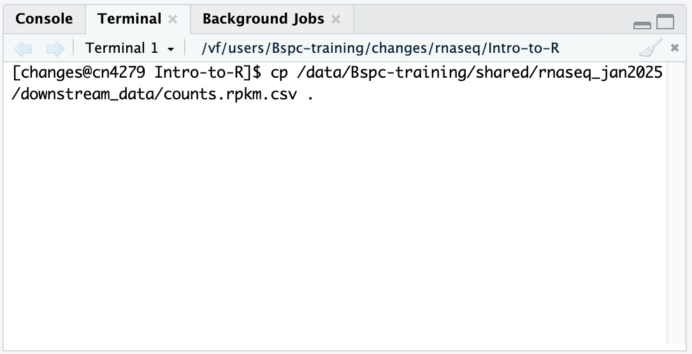
-
You can
cpas we have before, so go ahead and run the following commands:$ cp /data/Bspc-training/shared/rnaseq_jan2025/downstream_data/mouse_exp_design.csv .
The files should appear in your Files Pane!
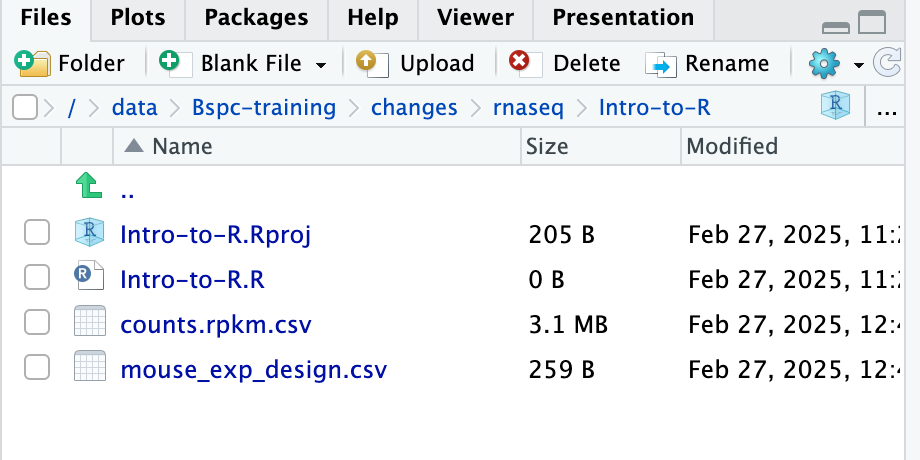
If you were on your local computer using RStudio, you would do something like the following to get the data into your working directory:
- Download the practice metadata file using this link
You can access the files we need for this workshop using the links provided below. If you right click on the link, and “Save link as..”. Choose
~/Desktop/Intro-to-R/dataas the destination of the file. You should now see the file appear in your working directory.
The dataset: metadata
We a file in which we identify information about the data or metadata. Our metadata is also stored in a CSV file. In this file, each row corresponds to a sample and each column contains some information about each sample.
The first column contains the row names, and note that these are identical to the column names in our expression data file above (albeit, in a slightly different order). The next few columns contain information about our samples that allow us to categorize them. For example, the second column contains genotype information for each sample. Each sample is classified in one of two categories: Wt (wild type) or KO (knockout). What types of categories do you observe in the remaining columns?
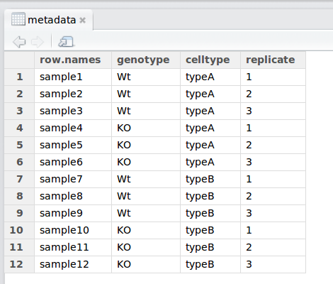
R is particularly good at handling this type of categorical data. Rather than simply storing this information as text, the data is represented in a specific data structure which allows the user to sort and manipulate the data in a quick and efficient manner.
Reading in Data
So, now we have our files in our working directory! But…how do we get them into R?
The read.csv() function
First, check the arguments for the function using the ? to ensure that
you are entering all the information appropriately:
?read.csv
The first thing you will notice is that you’ve pulled up the
documentation for read.table(), this is because that is the parent
function and all the other functions are in the same family.
The next item on the documentation page is the function Description, which specifies that the output of this set of functions is going to be a data frame - “Reads a file in table format and creates a data frame from it, with cases corresponding to lines and variables to fields in the file.”
In usage, all of the arguments listed for read.table() are the default
values for all of the family members unless otherwise specified for a
given function. Let’s take a look at 2 examples:
- The separator -in the case of
read.table()it issep = ""(space or tab), whereas forread.csv()it issep = ","(a comma).
2. The header - This argument refers to the column headers that
may (TRUE) or may not (FALSE) exist in the plain text file you are
reading in. In the case of read.table() it is header = FALSE (by
default, it assumes you do not have column names) * whereas for
read.csv() it is header = TRUE (by default, it assumes that all your
columns have names listed).
The take-home from the “Usage” section for read.csv() is that it
has one mandatory argument, the path to the file and filename in
quotations; in our case that is mouse_exp_design.csv.
The
stringsAsFactorsargumentNote that the
read.table {utils}family of functions has an argument calledstringsAsFactors, which by default is set to FALSE (you can double check this by searching the Help tab forread.tableor running?read.tablein the console).If
stringsAsFactors = TRUE, any function in this family of functions will coercecharactercolumns in the data you are reading in tofactorcolumns (i.e., coerce fromvectortofactor) in the resulting data frame.If you want to maintain the
character vectordata structure (e.g., for gene names), you will want to make sure thatstringsAsFactors = FALSE.
Create a data frame by reading in the file
At this point, please check the extension for the mouse_exp_design
file within your data folder. You will have to type it accordingly
within the read.csv() function.
read.csvis not fussy about extensions for plain text files, so even though the file we are reading in is a comma-separated value file, it will be read in properly even with a.txtextension.
Let’s read in the mouse_exp_design file and create a new data frame
called metadata.
metadata <- read.csv(file="mouse_exp_design.csv")
NOTE: RStudio supports the automatic completion of code using the Tab key. This is especially helpful for when reading in files to ensure the correct file path. The tab completion feature also provides a shortcut to listing objects, and inline help for functions. Tab completion is your friend! We encourage you to use it whenever possible.
Go to your Global environment and click on the name of the data frame you just created. When you do this the metadata table will pop up on the top left hand corner of RStudio, right next to the R script.
You should see a subtle coloring (blue-gray) of the first row and first column, the rest of the table will have a white background. This is because your first row and first columns have different properties than the rest of the table, they are the names of the rows and columns respectively.
Earlier we noted that the file we just read in had column names (first
row of values) and how read.csv() deals with “headers”. In addition to
column headers, read.csv() also assumes that the first column contains
the row names.
Row names and column names are really handy when subsetting data structures and they are also helpful to identify samples or genes. We almost always use them with data frames.
Inspecting data structures
There are a wide selection of base functions in R that are useful for
inspecting your data and summarizing it. Let’s use the metadata file
that we created to test out data inspection functions.
Take a look at the dataframe by typing out the variable name metadata
and pressing return; the variable contains information describing the
samples in our study. Each row holds information for a single sample,
and the columns contain categorical information about the sample
genotype(WT or KO), celltype (typeA or typeB), and
replicate number (1,2, or 3).
Suppose we had a larger file, we might not want to display all the
contents in the console. Instead we could check the top (the first 6
lines) of this data.frame using the function head():
head(metadata)
List of functions for data inspection
Below is a non-exhaustive list of functions to get a sense of the content/structure of data. The list has been divided into functions that work on all types of objects, some that work only on vectors/factors (1 dimensional objects), and others that work on data frames and matrices (2 dimensional objects).
We have some exercises below that will allow you to gain more familiarity with these. You will definitely be using some of them in the next few homework sections.
- All data structures - content display:
str(): compact display of data contents (similar to what you see in the Global environment)class(): displays the data type for vectors (e.g. character, numeric, etc.) and data structure for dataframes, matrices, listssummary(): detailed display of the contents of a given object, including descriptive statistics, frequencieshead(): prints the first 6 entries (elements for 1-D objects, rows for 2-D objects)tail(): prints the last 6 entries (elements for 1-D objects, rows for 2-D objects)
- Vector and factor variables:
length(): returns the number of elements in a vector or factor
- Dataframe and matrix variables:
dim(): returns dimensions of the dataset (number_of_rows, number_of_columns) [Note, row numbers will always be displayed before column numbers in R]nrow(): returns the number of rows in the datasetncol(): returns the number of columns in the datasetrownames(): returns the row names in the datasetcolnames(): returns the column names in the dataset
Exercise: For the next few minutes, try some of these commands on
the metadata data frame.
Closing your HPC on Demand Session
- Make sure you have saved all relevant commands in the script you have a created - for example, please make sure you copy down the commands that you used to read in our files.
- Go to File -> Quit Session
- Answer “Save” to “Save workspace…” question. This will allow you to pick up right where you left off.
- Once the window refreshes, you can “Close Project” to make sure everything is saved.
- Go back to the HPC On Demand dashboard if you closed that tab, and click “Cancel” to relinquish these resources back to Biowulf.
Assignment: Set up for next week
Using HPC on Demand and following the instructions above in the RStudio Project section, create another RStudio project:
-
This RStudio project should also be created as a subdirectory of
/data/Bspc-training/YOUR_USERNAME/rnaseq/ - The project should be called
DEanalysis - Create
data/,results/and afiguresdirectory within your main project directory. -
Once you have set this up, copy the following files into the new
DEanalysisdirectory, in thedata/directory:-
Count data:
/data/Bspc-training/shared/rnaseq_jan2025/downstream_data/mov10_AllSamples_featurecounts.Rmatrix.txt -
Experimental metadata:
/data/Bspc-training/shared/rnaseq_jan2025/downstream_data/mov10_AllSamples_metadata.txt
-
To submit your assignment: Message me a screenshot on Slack of your
RStudio interface showing that you are in your new DEanalysis
directory and that the two files are visible in your Files Pane.
This lesson has been developed by members of the teaching team at the Harvard Chan Bioinformatics Core (HBC). These are open access materials distributed under the terms of the Creative Commons Attribution license (CC BY 4.0), which permits unrestricted use, distribution, and reproduction in any medium, provided the original author and source are credited.
- The materials used in this lesson are adapted from work that is Copyright © Data Carpentry (http://datacarpentry.org/). All Data Carpentry instructional material is made available under the Creative Commons Attribution license (CC BY 4.0).